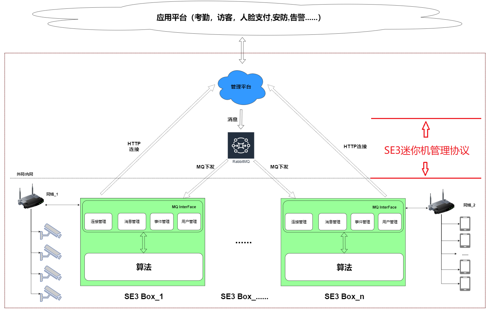

SE3迷你机管理协议说明
本协议主要规范负责管理平台和SE3 AI迷你机之间的数据交互，包括连接管理，用户管理，事件管理和设备状态上报等。
其作用域如下图所示：

- 连接管理
用于实现用于平台和SE3 AI 迷你机端之间的连接控制，包括MQ参数的获取，MQ channel建立等。
| 相关文档 | 说明 |
|---|---|
| 建立连接流程 | 介绍SE3 AI迷你机如何登录到管理平台 |
| 接口登录 | 规定SE3 AI迷你机登录请求参数，及管理平台返回参数 |
- 用户管理
用于处理消息中下放的人员ID，并基于人员ID获取到人员的详细信息，并将人员入库等。
| 相关文档 | 说明 |
|---|---|
| 用户管理流程 | 介绍SE3 AI迷你机和管理平台之间用户信息同步流程 |
| 添加或更新用户 | 管理平台向 SE3 AI 迷你机下发用户列表和用户详细信息。 本协议支持如下两种的数据同步方式： 消息中携带用户信息 独立接口获取用户详细信息 |
| 删除用户 | 管理平台告知SE3 AI迷你机删除一个或多个用户信息 |
| 人脸图像检测 | 管理平台请求SE3 AI迷你机对人脸图像做质量检测 |
- 事件管理
| 相关文档 | 说明 |
|---|---|
| 事件上报 | 规定了SE3 AI迷你机向管理平台上报事件的过程及数据格式。 内容包括：实时事件和历史事件，格式，时机等。 |
- 设备管理
| 相关文档 | 说明 |
|---|---|
| 采集设备配置上报 | 规定了SE3 AI迷你机向管理平台上报设备状态的过程及数据格式。 内容包括：SE3 AI迷你机，连接的采集设备的状态。 |
| 采集设备状态上报 | 规定了SE3 AI迷你机想管理平台上报“配置采集设备”动作的过程及数据格式。 内容包括：操作（增加/删除），采集设备类型，ID等。 |
- 系统管理
| 相关文档 | 说明 |
|---|---|
| 设备数据清理 | 规定了清空SE3 AI迷你机上数据的协议，包括清空用户，清空事件等消息 |
- 消息处理结果反馈
| 相关文档 | 说明 |
|---|---|
| 消息处理结果 | SE3 AI迷你机向管理平台反馈消息处理结果。 |
| 状态码详细说明 | 状态码定义 |
协议的版本更新，请参考文档历史版本信息。